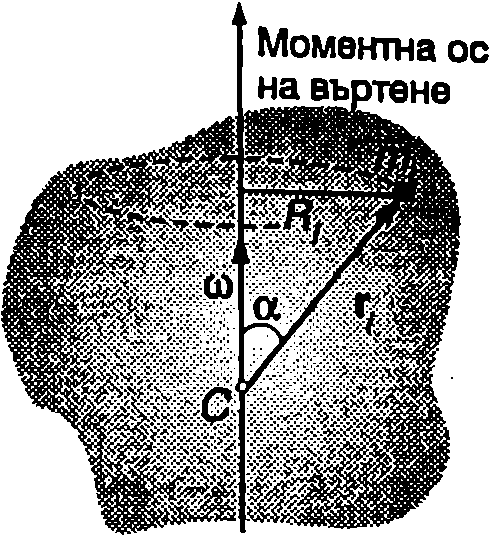
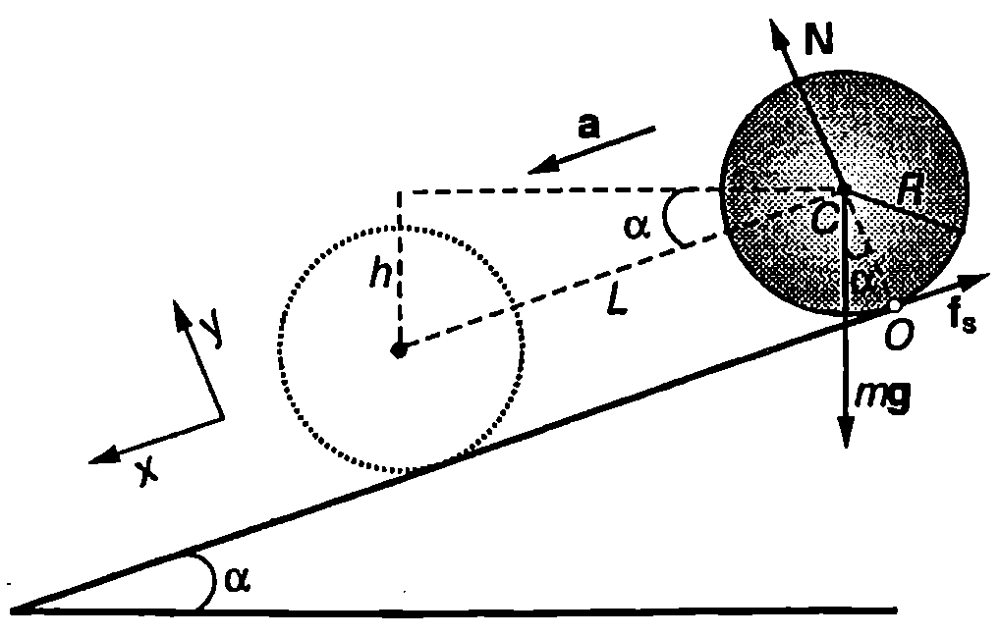
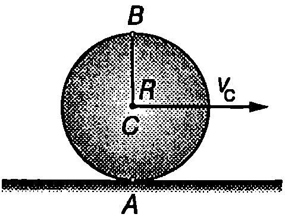
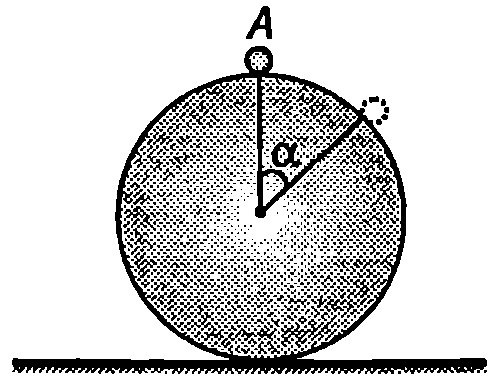
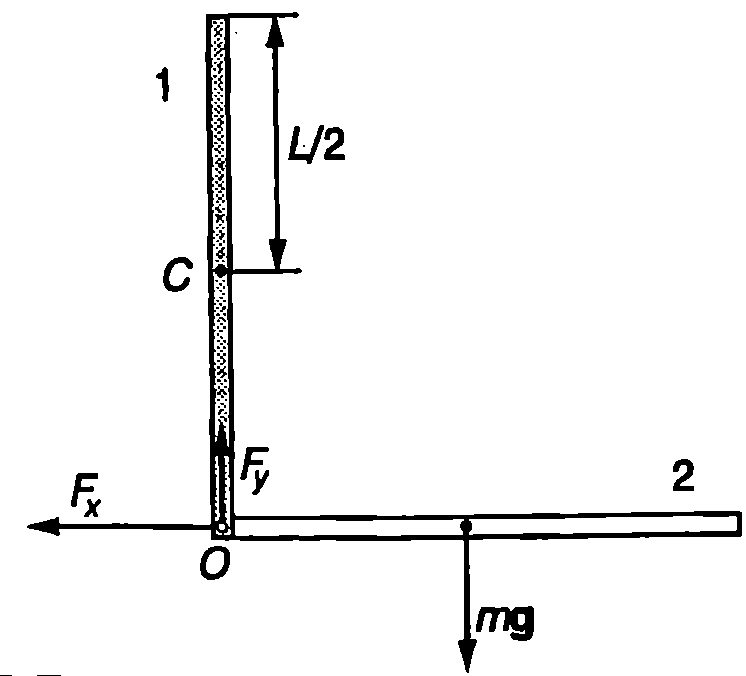
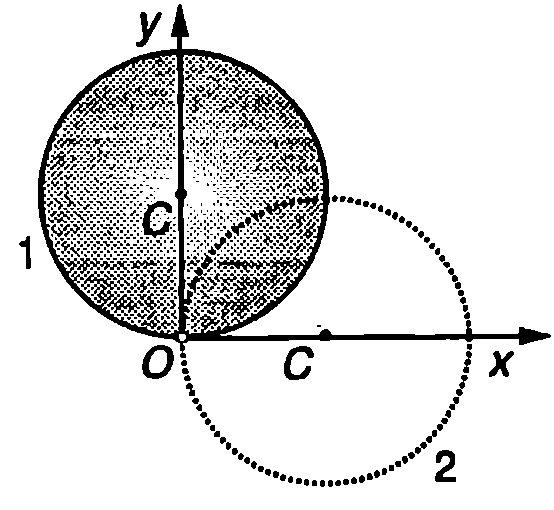

Плоскопаралелно движение
Плоскопаралелно се нарича такова движение на твърдо тяло, при което всички негови точки се преместват успоредно на дадена неподвижна равнина. При плоскопаралелно движение: 1. ъгловата скорост $\vec\omega$ на тялото не променя направлението си (може само да изменя големината си и да сменя посоката си на противоположната); 2. скоростта на центъра на масите $\vec v_C$ винаги е перпендикулярна на $\vec\omega$. Действително, ако горните две условия са изпълнени, скоростта $\vec v_a = \vec v_C + \vec\omega\times\vec r$ (вж. уравнение \eqref{eq:15.1} на стр.89) на произволна точка от тялото през цялото време лежи в една и съща равнина, която е перпендикулярна на $\vec\omega$. Следователно всички точки от тялото се движат в успоредни равнини тялото извършва плоскопаралелно движение. Пример за плоскопаралелно движение е търкалянето на обръч, диск, цилиндър или кълбо (Фиг. \ref{fig:17.1}): при търкалянето всички точки от тялото се движат в равнини, успоредни на равнината на чертежа. Във всеки момент от времето плоскопаралелното движение може да се разглежда като чисто въртене около неподвижна моментна ос (вж. Пример~\ref{ex:17.1}). Положението на тази ос спрямо тялото в общия случай се изменя по време на движението.

Плоскопаралелно движение.
`Фиг. 17.1`
Уравнението за моментите при плоскопаралелно движение има простия вид $d\vec L/dt = \vec M$, ако моментът на импулса $\vec L$ и резултантният момент $\vec M$ на външните сили са определени: 1. спрямо неподвижна точка $O$ ($\vec v_O = 0$); 2. спрямо точка $O$, която съвпада с центъра на масите $C$ на тялото ($\vec v_O = \vec v_C$). Тогава проекцията на уравнението за моментите върху ос, успоредна на вектора на ъгловата скорост $\vec\omega$, която минава през точка $O$ (или $C$), е $$
I_O \frac{d\omega}{dt} = M_O \text{ или } I_C \frac{d\omega}{dt} = M_C,
$$ където $M_O$ и $M_C$ са въртящите моменти спрямо тези оси. Връзката между инерчните моменти $I_O$ и $I_C$ спрямо двете успоредни оси се изразява от теоремата на Щайнер (уравнение \eqref{eq:16.5} на стр.94).
Използването на уравнението на динамиката в общия му вид (уравнение \eqref{eq:14.16} на стр. 86) и записването на проекцията му върху движеща се моментна ос на въртене, която не преминава през центъра на масите, в повечето случаи е неудобно и води до сложни за решаване уравнения.
\begin{psexample}[label=ex:17.1]{*}{} Докажете, че ако в даден момент абсолютната скорост $\vec v_A$ на някоя точка $A$ от твърдо тяло в перпендикулярна на неговата ъглова скорост $\vec\omega$, движението на тялото може да се разглежда като въртене около неподвижна ос. \end{psexample}
Решение
Избираме началото на неинерциалната отправна система, свързана с твърдото тяло, в точка $A$. Ще докажем, че точка $O$ с радиус-вектор $\displaystyle \vec r_O = \frac{\vec\omega\times\vec v_A}{\omega^2}$ в неподвижна (точката $O$ може да се намира извън тялото). Абсолютната скорост на точка $O$ е $$\vec v_O = \vec v_A + \vec\omega\times\vec r_O = \vec v_A + \vec\omega\times\frac{\vec\omega\times\vec v_A}{\omega^2} =$$ $$\vec v_A + \vec\omega\frac{\vec\omega\cdot\vec v_A}{\omega^2}-\vec v_A\frac{\vec\omega\cdot\vec\omega}{\omega^2} = \vec v_A - \vec v_A = 0,$$ където сме използвали формула А95 (вж. стр. 236) за тройно векторно произведение и сме отчели, че векторите $\vec v_A$ и $\vec\omega$ са взаимно перпендикулярни, т.е. $\vec\omega\cdot\vec v_A = 0$. Следователно точка $O$ е неподвижна и в дадения момент от времето тялото извършва въртене около неподвижна ос, която преминава през точка $O$ и е успоредна на вектора на ъгловата скорост $\vec\omega$. Тъй като в частния случай на плоскопаралелно движение скоростите на всички точки от тялото са перпендикулярни на вектора на ъгловата скорост $\vec\omega$, плоскопаралелното движение може да се разглежда като последователни завъртания около различни неподвижни оси.
Пример 17.2
Диск с радиус $R$ се търкаля по хоризонтална равнина. Центърът на масите C на диска се движи със скорост $\vec v_C$, а ъгловата скорост на въртене е $\vec\omega$ (Фиг. \ref{fig:17.1}). Да се определи положението на неподвижната моментна ос на въртене в следните случаи: a) $v_C = R/2$; б) $v_C = \omega R$; в) $v_C = 2\omega R$. \end{psexample}
Решение
Неподвижната точка $O$ (вж. Пример~\ref{ex:17.1}) лежи на вертикалната линия, прекарана през центъра на диска и се намира на разстояние $r = v_C/\omega$ под него: а) $r_1 = R/2$; б) $r_2 = R$; в) $r_3 = 2R$. Съответната неподвижна моментна ос на въртене е перпендикулярна на равнината на чертежа от Фиг. \ref{fig:17.1}.
Кинетична енергия
Нека началото на неинерциалната отправна система съвпада с центъра на масите C на твърдото тяло. За да определим кинетичната енергия на тялото спрямо инерциална отправна система, мислено ще го разделим на много голям брой малки елементи, които ще разглеждаме като материални точки. В даден момент от времето елемент с маса $m_i$ има радиус-вектор $\vec r_i$. Абсолютната му скорост се определя от уравнение \eqref{eq:15.1}: $\vec v_i = \vec v_C + \vec\omega\times\vec r_i$. Кинетичната енергия на елемента е $$E_{ki} = \frac{m_i\vec v_i^2}{2} = \frac{m_i(\vec v_C+\vec\omega\times \vec r_i)^2}{2} =$$ $$=\frac{m_iv_C^2}{2}+m_i\vec v_C\cdot(\vec\omega\times\vec r_i) + \frac{m_i(\vec\omega\times \vec r_i)^2}{2}.$$
Последният член от горното равенство записваме във вида $$\frac{m_i(\vec\omega\times\vec r_i)^2}{2}=\frac{m_i|\vec\omega\times\vec r_i|^2}{2} =$$ $$= \frac{m_i(\omega\vec r_i\sin\alpha)^2}{2} = \frac{m_i\omega^2\vec R_i^2}{2},$$
където $R_i = r_i\sin\alpha$ е разстоянието от елемента до моментната ос на въртене (Фиг. \ref{fig:17.2}).

`Фиг. 17.2`
Във втория член на уравнението за $E_{ki}$, който съдържа смесено векторно-скаларно произведение, сменяме местата на знаците за двете произведения (вж. формула А94 на стр.236) и извършваме сумиране по всички малки елементи. Кинетичната енергия на твърдото тяло е
$$E_k = \sum \frac{m_i v_C^2}{2} + (\vec v_C\times\vec\omega)\cdot\sum m_i \vec r_i + \omega^2 \sum \frac{m_i R_i^2}{2}$$
Тъй като началото $C$, от което се измерват радиус-векторите $\vec r_i$, на отделните елементи, е избрано в центъра на масите на твърдото тяло, от определението за център на масите следва, че $\sum m_i \vec r_i = 0$. Следователно $$
E_k = \frac{mv_C^2}{2} + \frac{\omega^2 I_C}{2},
$$ където $m = \sum m_i$ е масата на тялото, а $I_C = \sum m_i R_i^2$ е инерчният му момент спрямо моментна ос на въртене, преминаваща през центъра на масите C.
И така, кинетичната енергия на твърдо тяло може да се представи като сума от два члена. Първият член $mv_C^2/2$ има същия вид, както при постъпателно движение на тялото със скорост, равна на скоростта $\vec v_C$ на центъра на масите. Затова се нарича енергия на постъпателно движение на тялото. Вторият член $\omega^2 I_C/2$ изразява кинетичната енергия на въртене с ъглова скорост $\omega$ около моментна ос, минаваща през центъра на масите $C$ на тялото. По този начин всяко движение на твърдо тяло се представя като суперпозиция от две независими движения: постъпателно движение със скорост $\vec v_C$ и въртене около моментна ос, минаваща през центъра на масите.
При плоскопаралелно движение $I_C = const$, защото съгласно с определението за плоскопаралелно движение оста, спрямо която се пресмята $I_C$, не променя направлението си по време на движението. В общия случай на движение на твърдо тяло ъгловата скорост $\omega$ променя посоката си с течение на времето, поради което се изменя и направлението на оста, спрямо която се пресмята инерчният момент $I_C$, т.е $I_C$ е функция на времето. Тогава формула \eqref{eq:17.2} не е удобна за пресмятане на кинетичната енергия.
Както беше вече отбелязано, плоскопарелелното движение на твърдо тяло може да се разглежда като въртене около неподвижна ос. Ако се избере началото $O$ на неинерциалната отправна система да лежи върху неподвижната ос ($\vec v_0 = 0$), за кинетичната енергия се получава $$
E_k = \sum \frac{m_i (\omega \times \vec r_i)^2}{2} = \omega^2 \sum \frac{m_i R_i^2}{2} = \frac{\omega^2 I_O}{2}
$$ където $I_O = \sum m_i R_i^2$ е инерчният момент на тялото спрямо неподвижната моментна ос на въртене. В редица случаи инерчният момент се пресмята лесно с помощта на теоремата на Щайнер (вж. пример 17.3).
Пример 17.3
Тънка еднородна метална сфера с маса $m$ и радиус $R$ се търкаля без хлъзгане по наклонена равнина, която сключва ъгъл $\alpha$ с хоризонта. Определете ускорението на центъра на сферата. \end{psexample}
Решение
Вариант 1. Сферата извършва плоскопаралелно движение през цялото време на движението векторът на ъгловата скорост $\vec\omega$ е насочен перпендикулярно на равнината на чертежа от Фиг. \ref{fig:17.3}, а траекториите на всички точки от сферата лежат в успоредни равнини (успоредни на равнината на чертежа). На сферата действат три сили: сила на тежестта $m\vec g$, сила на нормална реакция на опората $\vec N$ и сила на триене $\vec f_s$ (Фиг. \ref{fig:17.3}). Търкалянето е без хлъзгане, което означава, че точка $O$ от сферата, която в даден момент се допира до равнината, в в покой спрямо равнината. Следователно оста, която е успоредна наши минава през точка $O$, в неподвижна моментна ос на въртене. Уравнението за моментите спрямо тази ос е
$$I_O\varepsilon = mgR\sin\alpha,$$

`Фиг. 17.3`
където $R\sin\alpha$ в рамото на силата на тежестта. Ще отбележим, че силата на триене $\vec f_s$, и силата на нормална реакция $\vec N$ не създават въртящи моменти спрямо оста $O$, тъй като техните рамена са нула. Между ъгловото ускорение в на сферата и ускорението а на нейния център C при търкаляне без хлъзгане съществува кинематична връзка $\varepsilon = a/R$. Инерчният момент на сферата спрямо оста $O$ определяме с помощта на теоремата на Щайнер $$I_O = I_C + md^2.$$ Заместваме $I_C = \frac{2}{3}mR^2$ (вж. уравнение \eqref{eq:16.15} на стр.97)) и $d=R$ и получаваме $$I_O = \frac{5}{3}mR^2.$$
Заместваме $I_O$ и $\varepsilon$ в уравнението за моментите и определяме ускорението $a$ $$a=\frac{3}{5}g\sin\alpha.$$
Вариант 2. Задачата може да се реши също така, ако се запише уравнението за моментите спрямо движеща се ос, която минава през центъра на масите $C$ и е успоредна на вектора на ъгловата скорост $\vec\omega$. Единствено силата на триене създава въртящ момент спрямо оста $C$. Уравнението за моментите спрямо оста $C$ е
$$I_C\varepsilon=f_s R\text{ или }(\frac{2}{3}mR^2)\frac{a}{R}=f_sR.$$
Тъй като силата на триене $f_s$ (сила на триене при покой) е неизвестна, трябва да запишем и уравнението за движението на центъра на масите на сферата. Проекцията на това уравнение върху оста $x$ (Фиг. \ref{fig:17.3}) в
$$mgsin\alpha-f_s=ma.$$
От двете уравнения за въртеливото и за постъпателното движение на сферата, изключваме неизвестната сила на триене и получаваме същия резултат за ускорението $a$, както във Вариант 1.
Вариант 3. Задачата може да се реши и енергетично. Тъй като силите на триене при покой не извършват работа, механичната енергия на сферата не се изменя. Нека в началния момент сферата е в покой. След като се спусне на разстояние $h$ по вертикалата, изменението на потенциалната енергия е равно на кинетичната енергия
$$mgh=\frac{I_O\omega^2}{2}=\frac{1}{2}(\frac{5}{3}mR^2)\left(\frac{v}{R}\right)^2,$$
където сме отчели, че при търкаляне без хлъзгане ъгловата скорост и скоростта на центъра на масите са свързани със съотношението $\omega = v/R$. Заместваме $h = L\sin\alpha$, където $L$ е изминатият от точка $C$ път върху наклонената равнина (Фиг. \ref{fig:17.3}), и съкращаваме на $m$. Получаваме
$$gL\sin\alpha = \frac{5}{6}v^2.$$
Диференцираме двете страни на полученото уравнение по времето
$$g\sin\alpha \frac{dL}{dt} = \frac{5}{6}2v\frac{dv}{dt}.$$
След като отчетем, че $dL/dt = v$ и $dv/dt = a$, от горното уравнение получаваме същия резултат за ускорението $a$, както по първите два метода.
Аналогия между величините, описващи постъпателното и въртеливото движение
В таблица 17.1 са съпоставени основните величини и закономерности при постъпателното и въртеливото движение на твърдо тяло. Постъпателното движение на твърдо тяло се описва по същия начин, както движението на материална точка (например движението на центъра на масите на тялото). От таблицата може да се направи изводът, че: 1. моментът на силата при въртеливото движение е аналог на силата при постъпателното движение; 2. моментът на импулса е аналог на импулса; 3. инерчният момент е аналог на масата. Следователно инерчният момент е мярка за инертността на телата при въртеливото движение. Всички ъглови кинематични величини ъгъл на завъртане, ъглова скорост и ъглово ускорение са свързани с динамичните (ъглови) величини: инерчен момент, момент на сила и момент на импулса чрез зависимости, които са подобни на зависимостите между съответните кинематични и динамични характеристики на постъпателното движение (път, скорост и ускорение, от една страна, и маса, сила и импулс от друга страна).
\begin{table}
\begin{tabular}{cc}
Постъпателно движение& Въртеливо движение\\
$s$ - път& $\theta$ - ъгъл на завъртане\\
$v$ - скорост& $\omega$ - ъглова скорост\\
$v = ds/dt$ & $\omega = d\theta/dt$ \\
$a = dv/dt$ & $\varepsilon = d\omega/dt$\\
$a$ - ускорение& $\varepsilon$ - ъглово ускорение\\
$m$ - маса& $I$ - инерчен момент\\
$\vec F$ - сила& $\vec M$ - момент на сила\\
$\vec p$ - импулс& $\vec L$ - момент на импулса\\
$p_z = mv_z$- проекция на импулса върху ос& $L_z = I_z \omega$ - проекция на момента на импулса върху оста на въртене\\
$d\vec p/dt = \vec F$&$d\vec L/dt = \vec M$\\
$ma = F$ &$I_z\varepsilon = M_z$\\
$E_k = mv^2/2$ & $E_k = I_z\omega^2/2$.\\
\end{tabular}
Аналогия между величините, описващи постъпателното и въртеливото движение на твърдо тяло.
\label{table:17.1}
\end{table}
Задачи
- Еднороден цилиндър с маса $m = 2$ kg и радиус $R$ = 5 cm се търкаля без хлъзгане по хоризонтална равнина (Фиг. \ref{fig:17.4}). Скоростта на центъра на масите на цилиндъра е $v_C = 2$ m/s. Инерчният момент на цилиндъра е $I_C = mR^2/2$. Определете:
а) ъгловата скорост $\omega$ на цилиндъра;
б) скоростта $v_A$ на точка $A$, която е в контакт с равнината, и скоростта $v_B$ на най-горната точка $B$ (Фиг. \ref{fig:17.4});
в) кинетичната енергия на цилиндъра.

`Фиг. 17.4`
2. Топка за боулинг започва да се търкаля без хлъзгане по наклонена равнина. Определете скоростта на центъра на масите $C$ на топката след като последният се спусне на височина $h = 2$ m.
-
Хоризонтална платформа може да се върти без триене около вертикална ос. Колко работа трябва да се извърши, за да се завърти платформата с ъглова скорост $\omega = 4$ rad/s? Инерчният момент на платформата e $I = 300$ kg.m$^2$.
-
Пресметнете кинетичната енергия на въртене на Земята около нейната ос. Приемете Земята за еднородно кълбо с радиус $R_\text{З} = 6,!4.10^6$ m и маса $M_\text{З} = 6.10^{24}$ kg, което се върти около ос, минаваща през центъра му.
-
Еднороден цилиндър с маса $m$ и радиус $R$ се търкаля без хлъзгане по наклонена равнина, която сключва ъгъл $\alpha$ с хоризонта (Фиг. \ref{fig:17.3}). Определете ускорението на центъра на масите на цилиндъра. Инерчният момент на цилиндъра е $I_C = mR^2/2$.
-
Около диск с маса $m$ и радиус $R$ в навита нишка. Единият край на нишката е завързан за тавана (Фиг. \ref{fig:17.5}). В началния момент дискът е в покой. Изразете скоростта на центъра на масите $C$ на диска като функция на изминатия от точка $C$ път $h$: $v_C(h)$. Инерчният момент на диска е $I_C = MR^2/2$.
-
Еднородно топче с радиус $r$, което в началния момент е в покой в най-високата точка $A$ на сфера (Фиг. \ref{fig:17.6}), започва да се търкаля без хлъзгане по повърхността на сферата (сферата остава неподвижна). Определете ъгъла $\alpha$, при който топчето ще се откъсне от сферата и ще продължи да пада свободно. Инерчният момент на топчето е $I=\frac{2}{5}mr^2$.
Указание. Топчето ще се откъсне, когато силата на нормална реакция на опората стане нула ($N = 0$). В неинерциална отправна система, в която центърът на масите на топчето е в покой, $N = 0$, когато центробежната инерчна сила уравновеси компонентата на силата на тежестта, насочена към центъра на сферата.

`Фиг. 17.5`

`Фиг. 17.6`

`Фиг. 17.7`
Използвайте също така закона за запазване на енергията.
- Еднородна пръчка с дължина $L$ и маса $m$ пада без начална скорост от вертикалното положение 1 на Фиг. \ref{fig:17.7}, въртейки се без триене около хоризонталната ос $O$. Определете хоризонталната компонента $F_x$ и вертикалната компонента $F_y$ на силата, с която оста $O$ действа на пръчката, в момента, когато тя преминава през хоризонталното положение 2. Инерчният момент на пръчката спрямо оста $O$ е $I = mL^2/3$.
Указание. В положение 2 центърът на масите на пръчката $C$ се движи по окръжност с центростремително ускорение $\omega^2 L/2$, което се създава от силата $F_x$. Използвайте закона за запазване на механичната енергия, за да определите ъгловата скорост на пръчката. За определянето на $F_y$ използвайте уравнението за моментите при въртенето на пръчката около оста $O$ и уравнението за движението на центъра на масите по оста $y$. Между ъгловото ускорение в и ускорението на центъра на масите а има кинематична връзка: $a = \varepsilon(L/2)$.
- Еднороден диск с маса $m$ и радиус $R$ може да се върти без триене около хоризонтална ос $O$, минаваща през периферията на диска. Дискът започва да пада без начална скорост от положение 1 на Фиг. \ref{fig:17.8}. Определете ъгловата скорост $\omega$ на диска, хоризонталната компонента $a_x$ и вертикалната компонента $a_y$ на ускорението на неговия център на масите $C$, когато дискът е в положение 2.

`Фиг. 17.8`